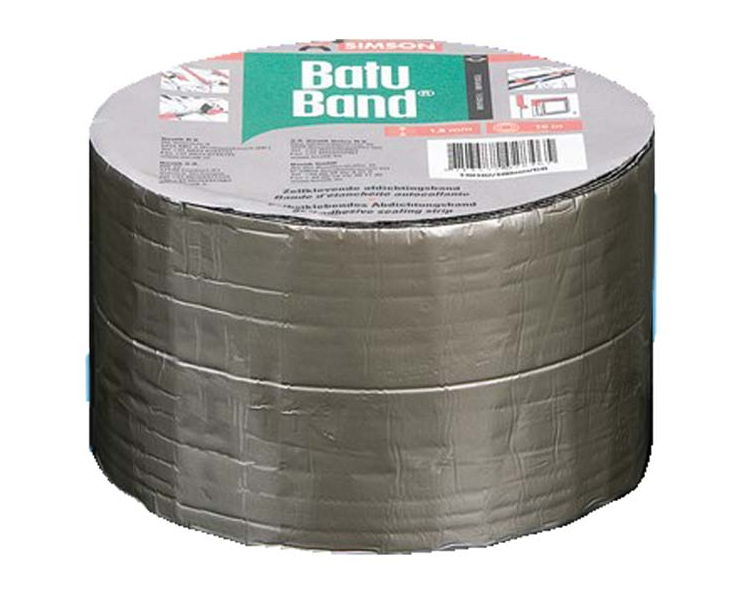

Батубанд - битум-каучуковая самоклеящаяся уплотнительная лента

Батубанд - битум-каучуковая самоклеящаяся уплотнительная лента. Толщина 1,5 мм. Лицевая сторона гидроизоляционной ленты снабжена алюминиевым покрытием.
Самоклеющаяся уплотнительная лента Батубанд применяется для герметизации мансардных окон, чердачных мансард, световых куполов и световых дорожек. Для защиты подоконных панелей, закраин и обрешётки крыш, заделки проломов (проходок) крыш, уплотнения швов между готовыми элементами, ремонта свинцовых прокладок, водосточных желобов и водосточных труб, ремонта битуминозных кровельных покрытий. Материал очень хорошо подходит для покрытия сложных деталей и соединений, в силу своей эластичности и способности длительное время сохранять форму.